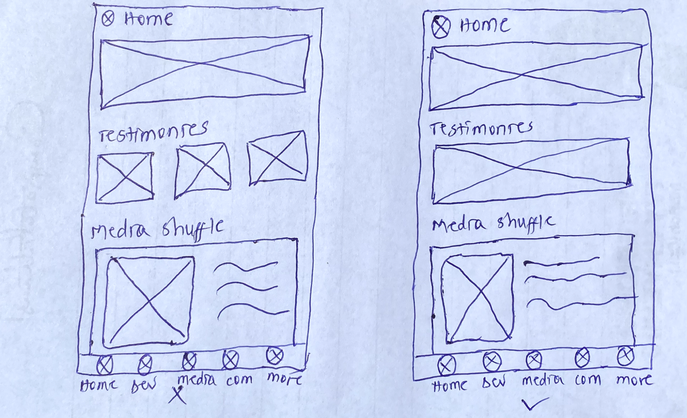

JANUARY 2024
T30 is a non-denominational Christian platform with daily devotionals and collective prayer times designed to help you build a consistent devotional life. Since its debut in 2020, T30's user base has grown into thousands, allowing people from all over the world to connect, pray and read the word daily.
Just a heads-up: I'm not part of T30, and the opinions in this case study are all mine. Unlike the T30 designers, I don't have complete access to the user data that shaped their current design, the font type, images and the specific elements they used for their design. So, this case study isn't all-encompassing, and I'm not proposing T30 should switch to my redesign.
My goals for the redesign:
My goals for my own personal development:
The roles I assumed during the process of building this redesign:
While the current app design serves its purpose, it lacks key elements that could significantly enhance user engagement and community interaction. Users have expressed a desire for features such as testimonials, a community space, a journaling platform, and bookmark functionality, and a voice reader functionality to enrich their experience. To create a more vibrant and user-friendly platform, the redesign aims to seamlessly integrate these components, fostering a stronger sense of community and personal connection for believers.
Among the 10 T30 users I interviewed, there were 4 males and 6 females. The age of the male users ranged from 25 to 31 years old, while the female users ranged from 22 to 30 years old. 90% are working class.
To make this even more interesting, 30% of the users I interviewed ranked T30 in their Top 3 Most Used Application. Additionally, 50% of the people sampled uses T30 everyday.
And the fun goes on
I asked the 10 T30 users I interviewed, What motivates you to use T30 regularly, and can you share specific aspects that contribute to a positive engagement experience?
I collected a total of 30 adjectives.
The top 3 adjectives were:
Daily, Positive, and Spiritual
Victory Edeke
Age: 22
Law student and content creator, spends her days creating interesting content and enjoys working out to keep fit
I use T30 to explore diverse spiritual perspectives. The app's ability to introduce me to a new perspectives keeps me engaged
John Otukere
Age: 31
Architect. I love drawing, and playing with codes. I just transitioned into tech, so I spend a lot of time coding.
T30 is a crucial part of my daily routine because it offers a quick and accessible way to connect with my faith
Average analysis of the 10 people I interviewed
Who do you relate with more? Are you like Victory, who uses T30 to explore diverse spiritual perspectives? Or are you like John, who uses T30 because it offers a quick and accessible way to connect with his faith? Or both?
Either way, I’ll be designing with users like you, Victory, and John in mind.
Now that you have a clearer insight into the intended recipients of my design, we can proceed to the more exciting elements!
Assessment of T30's current designs
Now that we've got the basics of T30 under our belts, let's dive into the good stuff! Get ready for some fun and exciting discoveries ahead!
Welcome to the creative hub, This is where ideas transform into user-friendly magic. Join me as we uncover the creative journey behind crafting new functionalities that elevate the user experience. Ready for the magic to unfold?
I didn't include my wireframes in this article to keep it short, but feel free to check them out LINK TO Wireframes here
Following user research, it was found that 20% of our users are keen on having a testimonial section in the app. This unique addition not only showcases positive user experiences but also acts as a valuable tool for building connections. Through sharing personal stories, it offers motivation, serves as a beacon of hope, and spreads the uplifting spirit of faith. Let's delve into how I crafted my design solutions with a focus on meeting the needs of my end users.
Design Process - Feature #1
Sketches of testimonial feature
As I brainstormed, I asked myself, 'Where's the perfect spot to showcase those amazing testimonials right off the bat?' The answer? The homepage! It's like giving users an immediate glimpse of encouragement, reminding them not to lose faith. This equally creates a user-friendly welcome that sets the tone for a seamless and enjoyable experience
Home Page Without Testimonials
Home Page Featuring Testimonials
After thorough user research, a notable finding surfaced: 20% of our users voiced a keen interest in having a community hub within the app. Understanding the value of nurturing connections and communal interactions among believers, we introduced the 'Community' feature. This fresh inclusion transcends traditional testimonials, establishing an interactive platform where users can share personal narratives, participate in enriching conversations, offer mutual support, and collectively enhance their faith journey.
Following our user research, a common sentiment emerged among our users: they desired a space within the app where they could connect with fellow believers and share their experiences, insights, and support. One user expressed this desire, stating, "I love T30 for its daily devotionals, but having a community space within the app would be amazing. Connecting with fellow believers could make the experience even richer, allowing us to share insights and support each other on our faith journeys." In this section, we'll delve into how I made my design decisions, while prioritizing the needs of my end users
Design Process - Feature #2
A picture of some sketches
During the brainstorming phase, I strategically considered the optimal placement for integrating the community feature, ensuring its immediate visibility. After careful deliberation, I concluded that the most effective approach was to substitute the 'Give' icon with the 'Community' icon. To streamline the interface and prevent overcrowding, I introduced the hamburger menu, thereby replacing the profile icon. This modification not only accommodated the inclusion of both the profile and give features but also alleviated clutter, creating additional space for the integration of other features under the 'More' section.
I thought of having the T30 team create the communities instead of letting users do it. This way, we prevent the app from having too many or irrelevant groups. Users can easily join any community of their choice without the hassle of navigating through numerous options